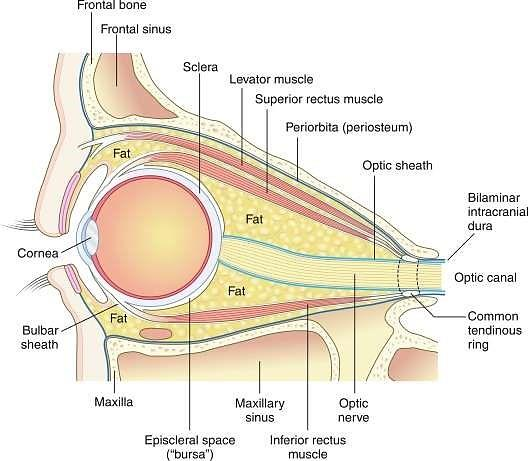

Part III · Anatomy
Nose, paranasal sinuses and orbital contents
Nose and paranasal sinuses
- The bony plates of the orbital roof, floor and medial wall are intimately related to the nasal cavity.
- The frontal, maxillary, ethmoid and sphenoid bones are pneumatized by paranasal sinuses arising from and contiguous with the nasal cavity.
Intra-orbital contents
- The eyeball.
- The extraocular muscles.
- The lacrimal gland.
- Vessels and nerves.
- The ciliary ganglion.
- Orbital fat.
